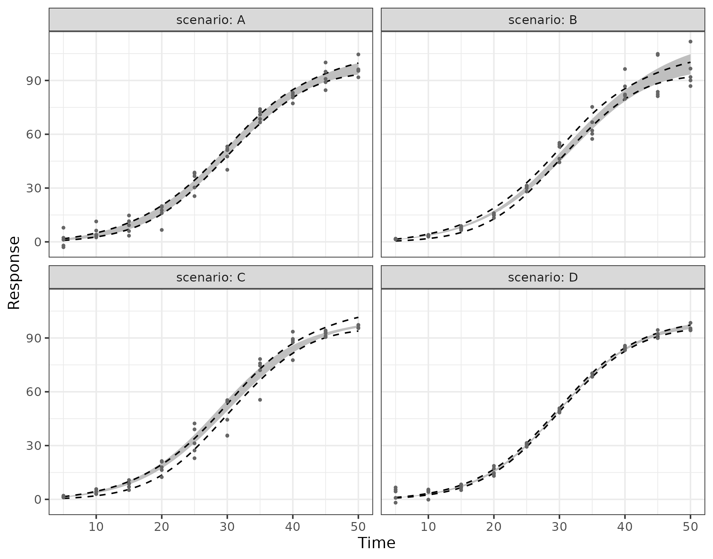

This vignette covers variance functions: residuals whose variance changes over the course of growth. It shows what they do to the confidence intervals of a single curve, and how they trade off against random effects and autocorrelation. The vignette Simulation checks that a variance function is recovered by simulation.
Variance functions
With a variance function, the residual standard deviation of an
observation is
,
with a function
of a covariate
(for the gaussian family, and for
of the lognormal family). The argument variance of
gcTMB() takes:
-
varIdent(form = ~ 1 | s): , a ratio for each stratum , e.g. each treatment or each day of measurement; -
varPower(form = ~ v): ; -
varConstPower(form = ~ v): , at least where is zero.
The covariate
is a variable of the data, the fitted curve fitted(.), or
its growth rate rate(.), the slope
of the curve. A variance that follows the growth rate is largest at the
inflection point. ?varFunc has the details.
Confidence intervals of a single curve
We simulate a logistic curve, , and , with five replicates at ten times, under four variance structures:
- A, a constant standard deviation of 4;
- B,
,
increasing with the curve:
varPower(form = ~ fitted(.))with ; - C,
,
largest at the inflection point:
varPower(form = ~ rate(.))with ; - D,
,
smallest at the inflection point:
varPower(form = ~ rate(.))with .
library(gcTMB)
library(ggplot2)
b <- c(100, 30, 6)
Time <- rep(seq(5, 50, by = 5), each = 5)
f <- b[1]/(1 + exp(-(Time - b[2])/b[3]))
rate <- f*(1 - f/b[1])/b[3]
sds <- list(A = rep(4, length(Time)), B = 0.08*f, C = 2*rate, D = 2/sqrt(rate))
set.seed(2)
scen <- do.call(rbind, lapply(names(sds), function(s)
data.frame(scenario = s, Time = Time, y = f + rnorm(length(Time), 0, sds[[s]]))))Each data set is fitted with a constant variance and with the two power functions; the AIC picks the true one in each scenario:
candidates <- list(constant = NULL, fitted = varPower(form = ~ fitted(.)),
rate = varPower(form = ~ rate(.)))
scenfits <- lapply(split(scen, scen$scenario), function(d)
lapply(candidates, function(v) gcTMB(y ~ Time, data = d, variance = v)))
t(sapply(scenfits, function(fl) sapply(fl, AIC)))
#> constant fitted rate
#> A 296.7242 298.5887 298.3681
#> B 322.8103 252.1230 324.6215
#> C 317.7054 290.5471 255.0336
#> D 212.1640 200.5685 196.4342The 95% Wald confidence bands of the curve,
predict(interval = "confidence"), with the true variance
function (shaded) and with a constant variance (dashed):
grid <- data.frame(Time = seq(5, 50, by = 0.5))
true <- c(A = "constant", B = "fitted", C = "rate", D = "rate")
bands <- do.call(rbind, lapply(names(true), function(s){
ci <- predict(scenfits[[s]][[true[s]]], newdata = grid, interval = "confidence")
c0 <- predict(scenfits[[s]]$constant, newdata = grid, interval = "confidence")
data.frame(scenario = s, Time = grid$Time, fit = ci$fit, lwr = ci$lwr, upr = ci$upr,
lwr0 = c0$lwr, upr0 = c0$upr)
}))
ggplot(bands, aes(Time)) +
geom_ribbon(aes(ymin = lwr, ymax = upr), fill = "grey75") +
geom_line(aes(y = lwr0), linetype = "dashed") +
geom_line(aes(y = upr0), linetype = "dashed") +
geom_point(data = scen, aes(y = y), size = 0.6, colour = "grey40") +
facet_wrap(~ scenario, labeller = label_both) +
labs(x = "Time", y = "Response") +
theme_bw()
The variance function gives the observations where they vary little more weight, so the curve is estimated more precisely there: early on in B, before and after growth in C, and around the inflection point in D. A constant variance spreads the uncertainty evenly over the curve, too narrow where the observations vary most and too wide where they vary least.
Random effects, autocorrelation and a variance function
With repeated measurements of the same plants, random effects,
autocorrelation and a variance function all change the variance of the
observations around the curve. Random effects of the plants make the
spread around the population curve grow as the plants grow, even when
the residuals have a constant variance; a variance function changes the
variance of the residuals themselves. We fit a single curve to the
heights of 20 plants of FabaHeights26:
fh <- droplevels(subset(FabaHeights26, Genotype == "Navarra" & Soil == "Loamy" &
Treatment == "Irrigated"))
re <- b1 + b2 ~ 1 | Plant_ID
car <- corCAR1(form = ~ DAS | Plant_ID)
power <- varPower(form = ~ fitted(.))
day <- varIdent(form = ~ 1 | DAS)
specs <- list(
"constant" = list(),
"power" = list(variance = power),
"random" = list(rform = re),
"random + power" = list(rform = re, variance = power),
"random + rate" = list(rform = re, variance = varPower(form = ~ rate(.))),
"random + day" = list(rform = re, variance = day),
"random + CAR(1)" = list(rform = re, correlation = car),
"random + CAR(1) + day" = list(rform = re, correlation = car, variance = day))
fits <- lapply(specs, function(s) do.call(gcTMB, c(list(Height ~ DAS, data = fh), s)))
tab <- t(sapply(fits, function(f)
c(df = attr(logLik(f), "df"), AIC = AIC(f), coef(f)[1:3], se = sqrt(diag(vcov(f)))[1:3])))
colnames(tab) <- c("df", "AIC", "b1", "b2", "b3", "se b1", "se b2", "se b3")
round(tab, 2)
#> df AIC b1 b2 b3 se b1 se b2 se b3
#> constant 4 1799.11 89.30 62.77 8.24 0.82 0.42 0.38
#> power 5 1610.32 90.76 63.60 9.39 1.09 0.45 0.22
#> random 7 1543.06 89.36 62.81 8.23 2.01 0.42 0.19
#> random + power 8 1453.54 89.92 63.05 8.80 2.02 0.40 0.17
#> random + rate 8 1539.90 89.03 62.73 8.16 2.07 0.43 0.21
#> random + day 19 1340.38 89.04 63.02 8.77 2.15 0.40 0.11
#> random + CAR(1) 8 1538.14 89.35 62.82 8.24 2.01 0.43 0.23
#> random + CAR(1) + day 20 1309.54 89.65 63.22 8.96 2.21 0.45 0.15Without random effects, the power of the fitted curve lowers the AIC a lot, as the heights spread out as the plants grow. But it treats the 260 heights as independent: with random effects, the 20 plants are the replicates, the AIC is lower still, and the standard error of the asymptote is about twice as large. The random effects come first; a variance function then describes the residuals around the curve of each plant. These still grow with the height, and are not largest at the inflection point (the power of the growth rate is close to 0):
sapply(fits[c("random + power", "random + rate")], varpars)
#> random + power.power random + rate.power
#> 0.38151624 0.08682909A variance for each day lowers the AIC the most, with or without the autocorrelation of the residuals of a plant. Its ratios show a single day, 83, with much larger residuals than the others, which no smooth function of the curve can follow:
round(rbind(day = varpars(fits[["random + day"]]),
"CAR(1) + day" = varpars(fits[["random + CAR(1) + day"]])), 2)
#> 28 35 42 49 56 63 69 83 90 98 106 114 122
#> day 1 0.48 0.56 1.37 1.50 1.56 2.65 7.29 3.24 1.31 1.74 1.10 2.07
#> CAR(1) + day 1 0.37 0.84 2.29 2.64 3.03 3.86 9.42 4.31 1.99 2.44 0.05 2.10With the autocorrelation, but not without it, day 114 gets a ratio close to 0, probably because its residuals hardly differ from those of the previous day, so that given them almost no variance is left. Such a ratio makes the AIC of the model optimistic, and a variance for each day needs many observations per day.